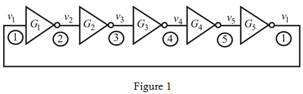
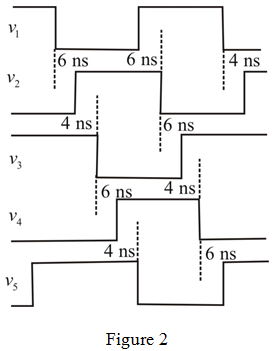

Calculate the value of propagation delay,  .
.
Substitute for  and for
and for  .
.
Thus, the value of propagation delay, is .
Draw the circuit of the ring oscillator.

Draw the one possible output waveform.

Thus, the one possible output waveform is shown in Figure 2
Calculate the value of propagation delay, .
Substitute for and for .
Thus, the value of propagation delay, is .
Calculate the value of frequency of oscillation,  .
.
Where,  is the number of inverters
is the number of inverters
Substitute  for
for  and for
and for  .
.
Thus, the value of frequency oscillation,  is .
is .